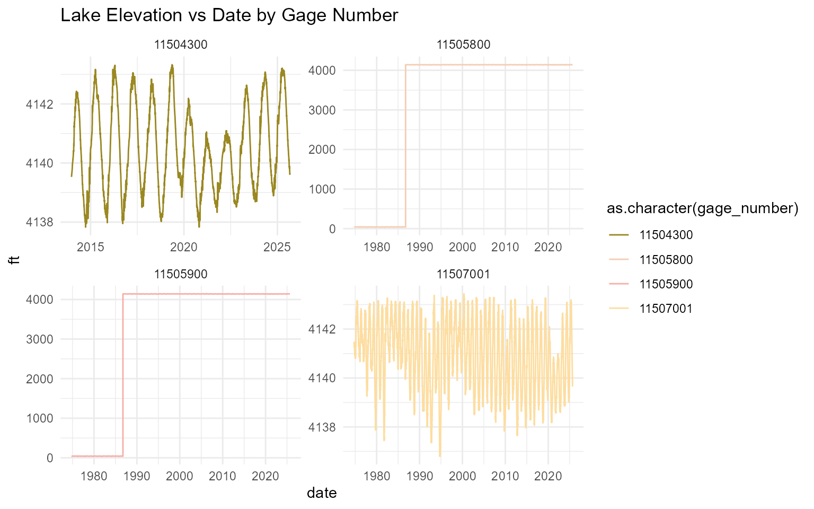
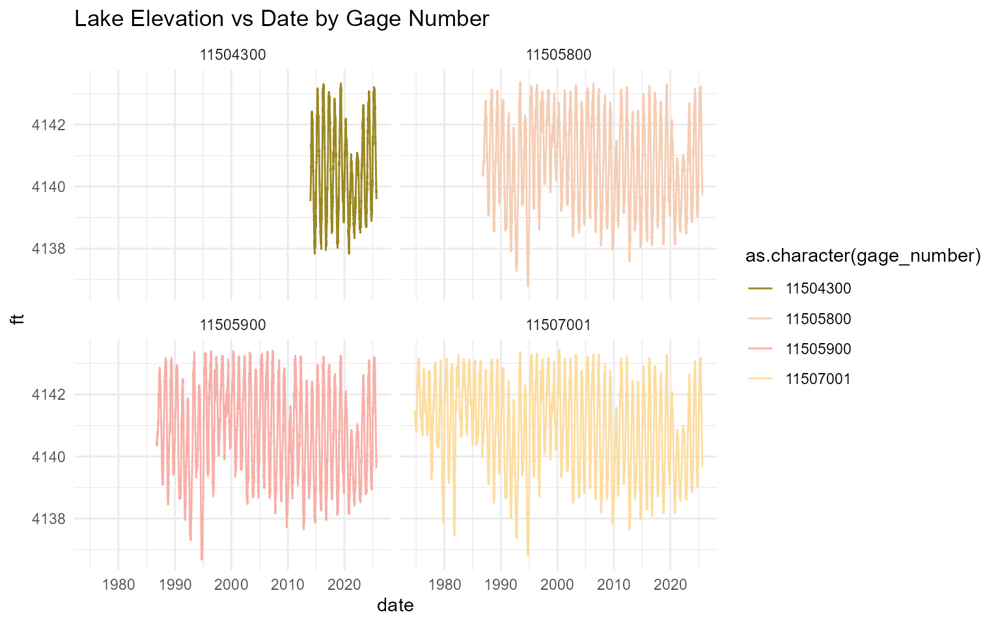

usgs_data_vignette.RmdThis document summarizes USGS temperature and flow data from gages across the Klamath Basin. For each gage, a time series plot and a summary of the available date range have been generated to provide an easy visual reference for data availability and to highlight any gaps.
#> # A tibble: 6 × 4
#> gage_number min_date max_date record_count
#> <chr> <date> <date> <int>
#> 1 11509500 1950-01-01 2025-09-03 27640
#> 2 11510700 1995-01-01 2025-09-03 11204
#> 3 11516530 1960-10-01 2025-09-03 23714
#> 4 11520500 1951-10-01 2025-09-03 27002
#> 5 11523000 1950-01-01 2025-09-03 27639
#> 6 11530500 1950-10-01 2025-09-03 26655Potential gages
#> # A tibble: 9 × 4
#> gage_number min_date max_date record_count
#> <chr> <date> <date> <int>
#> 1 11523200 1957-10-01 2025-09-03 24807
#> 2 11525500 1911-10-01 2025-09-03 41612
#> 3 11525655 1981-04-28 2025-09-03 12182
#> 4 11525854 2002-10-01 2025-09-03 8374
#> 5 11526250 2002-10-01 2025-09-03 8374
#> 6 11526400 2005-03-29 2025-09-03 7464
#> 7 11527000 1931-10-01 2025-09-03 28462
#> 8 11528700 1965-10-01 2025-09-03 21888
#> 9 11530000 1911-10-01 2025-09-03 35766List of USGS gages in Klamath watershed:
#> # A tibble: 7 × 4
#> gage_number min_date max_date record_count
#> <chr> <date> <date> <int>
#> 1 11502500 1917-10-01 2025-09-03 39086
#> 2 11504260 2021-08-05 2025-09-03 1490
#> 3 11504290 2017-05-04 2025-09-03 3045
#> 4 11507500 1961-10-01 2025-09-03 23349
#> 5 11509105 2012-02-29 2025-09-03 4936
#> 6 11509250 2012-09-30 2025-09-03 4720
#> 7 11509340 2011-10-31 2025-09-03 5057#> # A tibble: 11 × 4
#> gage_number min_date max_date record_count
#> <chr> <date> <date> <int>
#> 1 11507500 2003-09-30 2025-09-03 7923
#> 2 11509370 1991-05-24 2025-09-03 10550
#> 3 11509500 2005-12-21 2025-09-03 7069
#> 4 11510700 2018-11-01 2025-09-03 2494
#> 5 11523000 1969-04-06 2025-09-03 3211
#> 6 11530500 2016-10-01 2025-09-03 3245
#> 7 420448121503100 2018-05-12 2025-09-03 2265
#> 8 420451121510000 1989-12-29 2025-08-27 11311
#> 9 420741121554001 2003-05-16 2025-09-03 7372
#> 10 420853121505500 1999-02-06 2025-08-27 8959
#> 11 420853121505501 2003-05-01 2025-08-27 7978#> # A tibble: 8 × 4
#> gage_number min_date max_date record_count
#> <chr> <date> <date> <int>
#> 1 421935121551200 2022-04-22 2025-08-26 631
#> 2 422042121513100 2005-06-02 2025-08-26 3115
#> 3 422305121553800 2004-06-18 2025-08-26 3178
#> 4 422305121553803 2004-09-02 2025-08-26 3121
#> 5 422444121580400 2005-06-03 2025-08-26 1072
#> 6 422622122004000 2003-06-27 2025-08-26 3303
#> 7 422622122004003 2004-06-24 2025-09-03 3196
#> 8 422719121571400 2003-06-07 2025-08-26 3345#> # A tibble: 6 × 4
#> gage_number min_date max_date record_count
#> <chr> <date> <date> <int>
#> 1 415954121312100 2021-05-07 2025-05-15 584
#> 2 420036121333700 2021-05-07 2023-10-12 458
#> 3 420037121334100 2023-03-30 2025-08-28 792
#> 4 420833121402000 2023-03-30 2025-08-28 830
#> 5 421010121271200 2021-05-07 2024-07-17 308
#> 6 421015121471800 2007-04-05 2025-08-27 6281#> # A tibble: 10 × 4
#> gage_number min_date max_date record_count
#> <chr> <date> <date> <int>
#> 1 11491450 2024-05-07 2025-09-03 485
#> 2 11491470 2024-04-13 2025-09-03 509
#> 3 11492550 2023-11-30 2025-09-03 644
#> 4 11501000 2005-04-28 2025-09-03 7419
#> 5 11502500 2007-10-17 2025-09-03 6260
#> 6 11504115 2013-08-01 2025-09-03 2032
#> 7 11504260 2023-10-27 2025-09-03 674
#> 8 11507501 2001-06-16 2025-08-27 8261
#> 9 11511990 2022-12-15 2025-09-03 956
#> 10 421401121480900 2001-06-16 2025-08-27 8654Note that there are two gages (11505900 and 11505800) that have significantly lower lake levels pre September 1986. Look at raw script for more details.

Filtering years after Sept 1986 for the two gages

#> # A tibble: 4 × 4
#> gage_number min_date max_date record_count
#> <chr> <date> <date> <int>
#> 1 11504300 2013-12-24 2025-09-03 4263
#> 2 11505800 1974-09-30 2025-09-03 18428
#> 3 11505900 1974-09-30 2025-09-03 18487
#> 4 11507001 1974-10-01 2025-09-03 18595